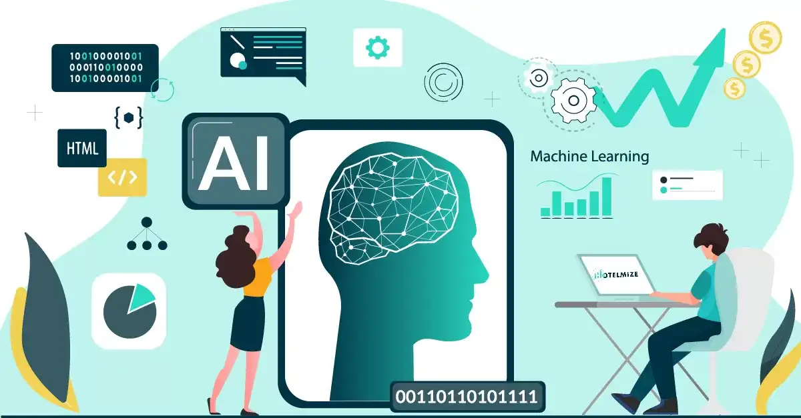

What is Ai Model?
AI modeling is the creation, training, and deployment of machine learning algorithms that emulate logical decision-making based on available data.

How does AI work in real life?
This Artificial Intelligence is used to identify cats and dogs. AI can analyze where cats and dogs are not allowed.

What is Teachable Machine?
Teachable Machine is a web-based tool that makes creating machine learning models fast, easy, and accessible to everyone.